Western Australia - Lake Argyll to Exmouth
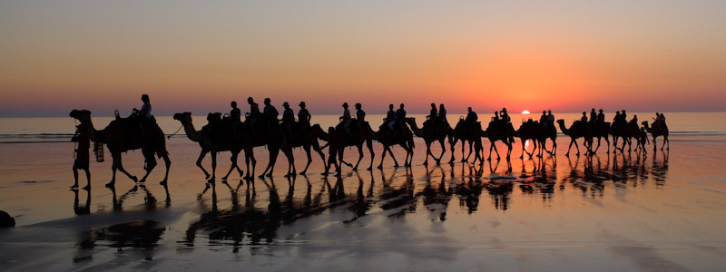
After a few hundreds of kilometers on the road, the Northern Territory border with Western Australia slowly approached. The scenery was vast - full of space, freedom and magic colours.
The deep blue sky of the vast deserted north was filled with blobs of white clouds which contrasted with gingery golden grasslands curving in the hot breeze. Alongside it, mud coloured termite mounds poked their heads out all over the surrounding area. Without air con and with the engine right underneath our seats it was like sitting on a heater surrounded by 40 degree heat but we were armed with enthusiasm and lots of podcasts and ready to take on the many more kilometers ahead before we could reach the west coast of Australia.
The landscape was beautiful to watch go by, for hours and hours there was no one else on the road. Except for the Road Trains. Famous in the north of Australia, the lack of a railway network has turned these monster vehicles - five times the size of a normal truck - into the preferred way to transport goods into this isolated area of the country. We held onto the wheel everytime one approached and no doubt they always overtook our old Mitsubishi which was averaging only 90km/h.
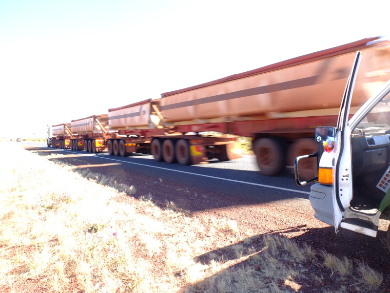
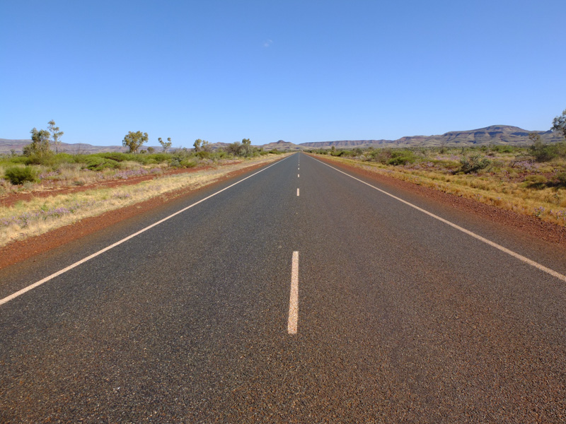
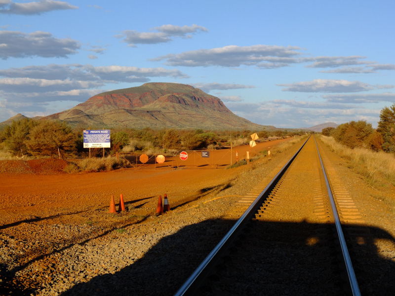
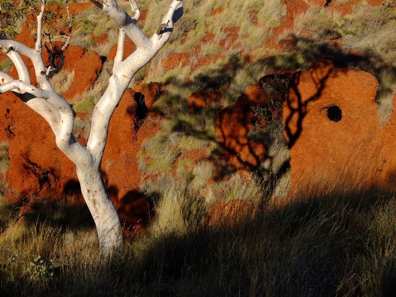
Since the van broke down on the day we bought it in Darwin we had been very scared the same thing could happen again - especially now when we were in the middle of nowhere. Everyday we aimed to get to a safe place to spend the night by sunset and we mixed our sleeping arrangements up, by mostly spending the night in free rest areas (which are plentiful and excellent in the NT/WA), and staying at a caravan park here and there whenever we needed to use the shower or a fridge.
The first logical stop after the WA border is Lake Argyle, a well worthwhile tiny (in Aussie terms) couple of hours detour from HWY1. Here, positioned on a plateau, in the middle of absolutely nothing for miles and miles around, is the largest man made lake in the world.
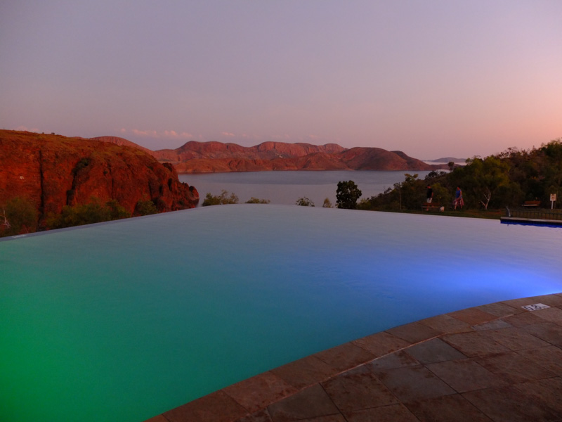
Overlooking this massive body of water in the deserted red landscape is the Lake Argyle Resort, a holiday park with an infinity pool posititioned perfectly to give the impression it overflowed straight onto the lake. We sat outside our van on a hot night, listening to the lyrics of Waltzing Matilda being played live at the park's bar and watching the bright full moon rising across the canyon, silhouetting the Boab trees.
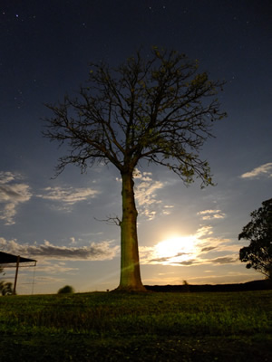
From here onwards the grasslands allowed more Boab trees to enter the scene. Weirdly enough, we learnt, that they are from the same family as the African Baobab, and are more characteristic of the even more remote Kimberley's futher north, but they suited their surroundings here and photographed perfectly against the red canyons. Foot on the accelerator, canyons came out of nowhere on both left and right horizons, and slowly a charcoal landscape got involved. Bush fires are important part of regeneration of the land for the native Aborigines who still look after these parts, so it became common to see large expanses of land still smoking.
To add to this, dead cows and kangaroos lined the side of HWY1 and were the only indication life existed in the surrounding hundreds of kilometres. Hit mostly at night by the unforgiving road trains the smell of their decomposing bodies would travel to and with us for miles and miles.
So we were glad to arrive at Broome, back on the coast. The next major town after Darwin heading westwards, it is famous for its tropical climate and wide sandy beach, where every day a pack of about 50 camels parade against the sunsetting coulours making for an out of place photo opportunity. It's an oasis of respite, an opportunity to get sated by the warm sea breeze and stock up on cold beer and food, much welcomed on the edge of the desert.
The next 500km from Broome to Port Headland, a city without many attractions, was torture. The whole way we knew we were painfully close to the ocean, or so it seemed on the map. But the 10km which stood in between us and the sea meant we couldn't even catch a glimpse of it. Only a couple of 4WD only roads led to the shore, so this part of the journey which we looked forward to, imagining coastal bliss and no crocodiles, turned out to be a lesson to be learnt. Things are always farther than they seem in Australia.
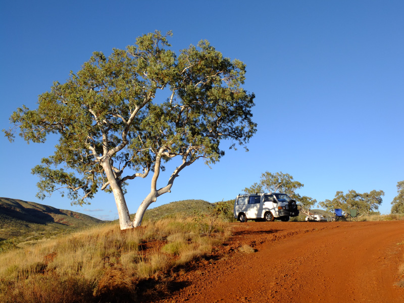
Afer this traumatising experience, but not because of it, we left the "coast" road at Port Headland and went south towards Karijini National Park about which we had heard amazing things. After so much driving we felt relieved to be able to go for a walk. Karijini is a beautiful national park, it has a few hiking trails which take you down into the river gorges and along the river bed following goannas around and where you can go jumping into fresh water swimming holes along the way. As with the recurring theme of northern Australia, most roads in the park were 4WD only, so we were limited on what we could explore but even so what we did manage to see would have kept us happy for a couple of weeks.
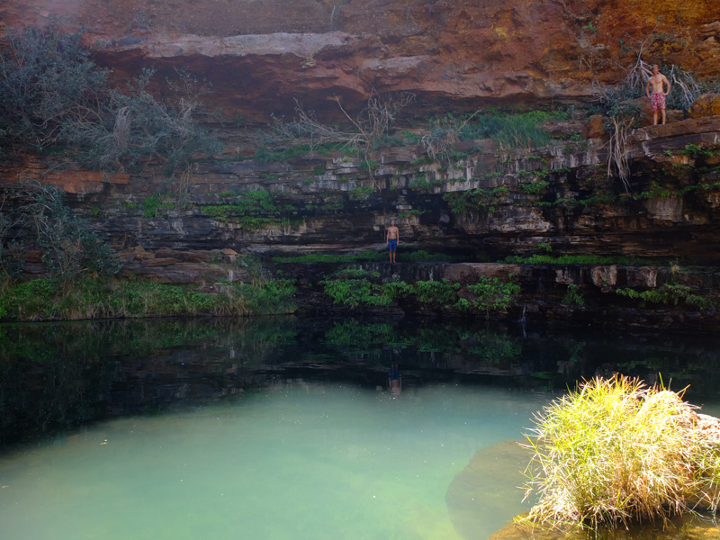
Back on the road one more day and we got to Exmouth, a lively small town where we caught up with old friends and camped for a few nights at Cape Range National Park, gateway to the Ningaloo reef, a protected marine park where you can snorkel and swim with whale sharks, and the tour companies guarantee you will. They ensure this by using spotter planes to locate the whales for the boats, making it much easier to find the huge docile mammals. This apparatus means the tours were beyond our budget but we may have regreted that decision. The beaches were also to die for, picture fine white sand, clear turquoise water, turtles and reef sharks, a place for some reason I hadn't imagined existed in Australia.
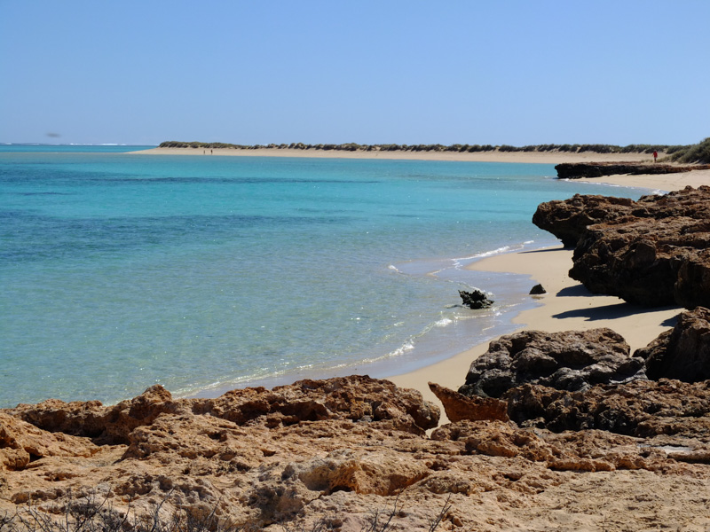
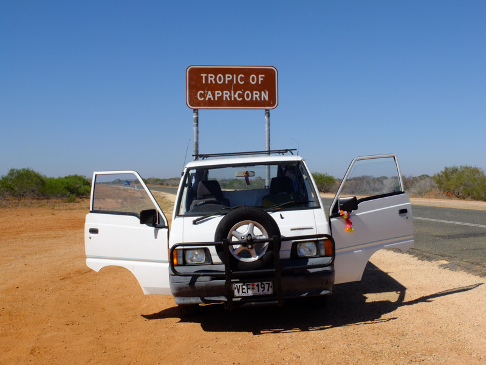
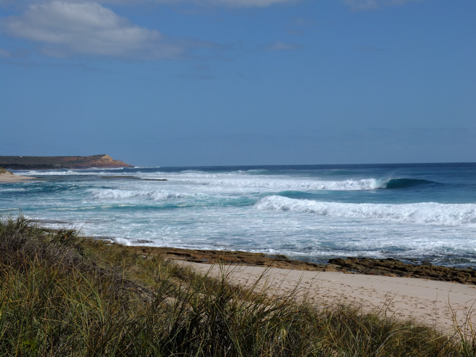
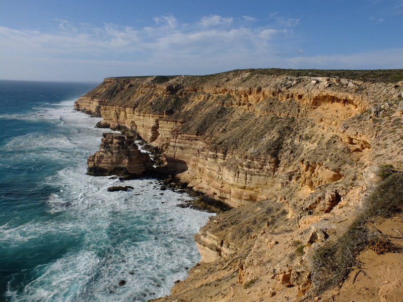
We spent days staring at the sea, swimming, hiking into dry river gorges with views over the coastline which holds the Marine Park. In the evening we camped in the campsites on the National Park, located right on the beach, and at sunset we watched Kangaroos bouncing out of their hiding shady holes for their evening feed like clowns in the circus.
From here to Geraldton was another couple of days drive, in which we drove further and further away from the tropic of Capricorn. Suddenly it all turned green, hilly and fertile.
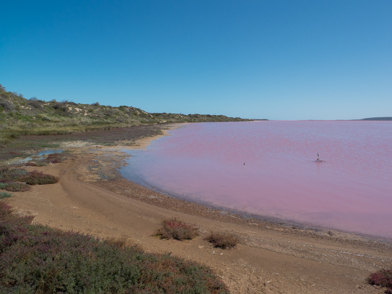
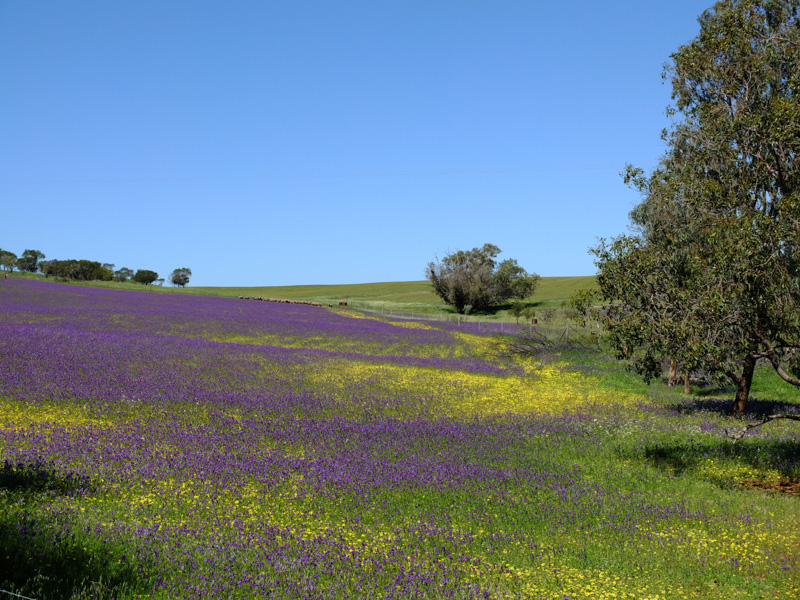
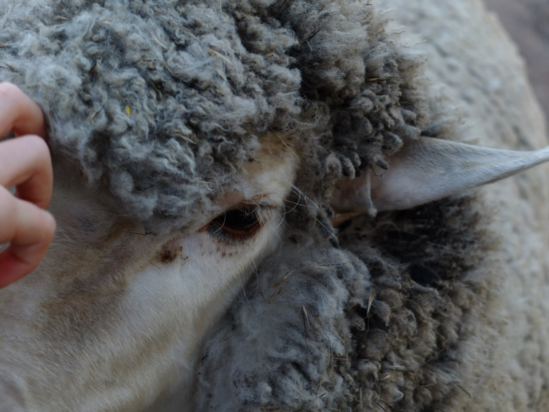
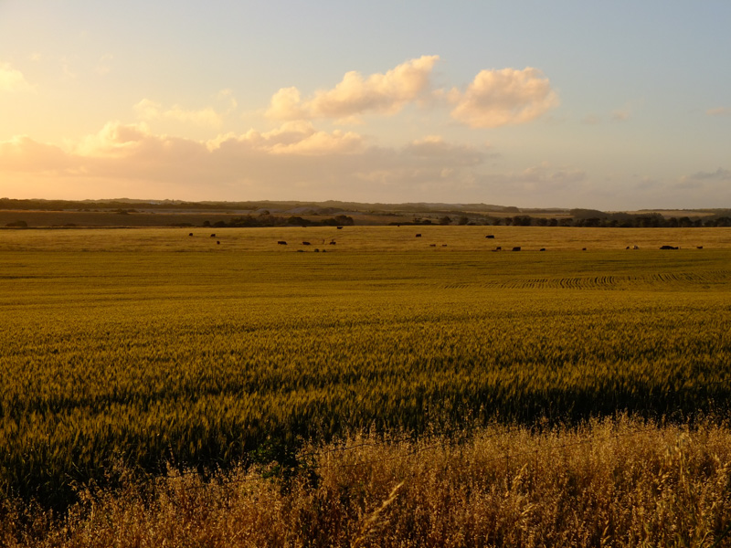
In an attempt to keep costs down, make ourselves useful and meet some local Aussies we would spend the next week volunteering with a wonderful family of five, baking bread, feeding lambs, catching our breath and giving our wheels a rest.
Comments